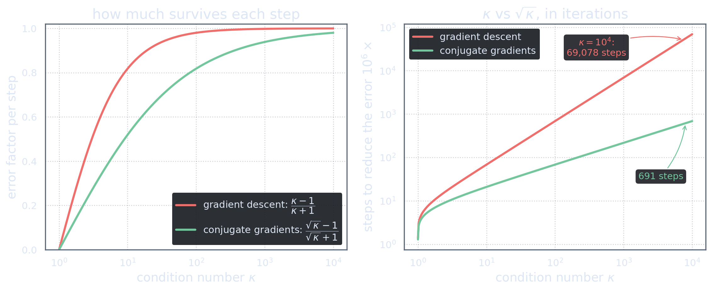
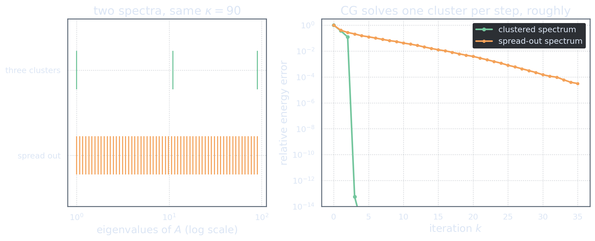

Optimal, Not Merely Good
Act 5 built CG from one particular choice — residuals as raw material — and it is fair to be suspicious of particular choices. Could a different construction, perhaps with look-ahead, or randomization, or some cleverness not yet invented, do better with the same resources?
Formulate the question honestly. Any method that starts at \(u_0\) and may only apply \(A\), add, scale, and take inner products has, after \(k\) operator applications, an iterate confined to the reachable set of Act 5: \[\tilde u_k \in u_0 + \Kry_k.\] That is the level playing field: every competitor, however clever, produces a point of the same affine subspace.
Now recall what CG achieves. The expanding-subspace theorem (Act 4) plus the span identity (Act 5) say that the CG iterate minimizes \(J\) over precisely \(u_0 + \Kry_k\); and the error identity (Act 3) converts minimal \(J\) into minimal energy-norm error. Chain the three — each act contributing exactly one link — and:
\[\normA{u_k^{\mathrm{CG}} - u} \;=\; \min_{v \,\in\, u_0 + \Kry_k} \normA{v - u}.\] At every step, the CG iterate is the best approximation to the solution that any black-box method could have produced from the same information, measured in the energy norm. The greedy-looking recurrence secretly performs global optimization over everything it has ever learned.
(The minimization properties go back to §4 of [HS52]; the statement in this Krylov form is Lemma 6.28 in Saad [Saa03], §6.11.3.)
This is why the question “could something do better?” has a clean answer: not in this norm, not with this information. The search for a better method is over before it starts; the only remaining freedoms are to change the information (preconditioning — below) or the norm (other Krylov methods, other trade-offs).
The Polynomial Picture
Optimality also hands us, almost by accident, the sharpest available lens on how fast CG converges. Elements of \(\Kry_k\) are polynomials in \(A\) applied to \(r_0\) (the popup of Act 5), and \(r_0 = A(u - u_0)\), so a short manipulation turns the optimality statement into a statement about polynomials: writing \(e_0 = u_0 - u\), \[\normA{u_k - u} \;=\; \min_{\substack{\pi \text{ poly of degree} \le k \\ \pi(0) = 1}} \;\normA{\pi(A)\, e_0}.\] The method is, in effect, free to apply to its initial error any degree-\(k\) polynomial of the operator with \(\pi(0)=1\), and it automatically applies the best one.
Why is that powerful? Because \(\pi(A)\) acts on each spectral component of the error as multiplication by \(\pi(\lambda)\), \(\lambda\) running over the spectrum of \(A\). So \[\normA{u_k - u} \;\le\; \Bigl(\max_{\lambda \in \operatorname{spec}(A)} |\pi(\lambda)|\Bigr)\, \normA{e_0} \qquad\text{for any admissible } \pi,\] and convergence analysis becomes a question you can draw: how small can a degree-\(k\) polynomial with \(\pi(0)=1\) be on the spectrum?
If all we know is that the spectrum lies in an interval \([\gamma, \Gamma]\), the best choice is a scaled Chebyshev polynomial, and the classical answer is \[\normA{u_k - u} \;\le\; 2\left(\frac{\sqrt{\kappa}-1}{\sqrt{\kappa}+1}\right)^{k} \normA{e_0}, \qquad \kappa = \Gamma/\gamma.\] There it is: the celebrated \(\sqrt{\kappa}\). Where gradient descent contracts like \((\kappa-1)/(\kappa+1)\), CG contracts like the same expression with \(\kappa\) replaced by its square root — the difference between 11,500 steps per digit and about 58 at \(\kappa = 10^4\). (The Chebyshev argument is worked out in Saad [Saa03], §6.11.3, Theorem 6.29; the same bound in the Hilbert-space setting of these notes is due to Daniel [Dan67].)

The spectrum is the whole story
But the Chebyshev bound is only the pessimist’s corner of the polynomial picture, because it uses nothing about the spectrum except its endpoints. The minimizing polynomial sees everything. Suppose the eigenvalues gather in \(m\) tight clusters: a degree-\(m\) polynomial can place one root in each cluster and be tiny on the entire spectrum — so CG essentially converges in \(m\) steps, regardless of \(\kappa\). The refined theory — including the famous superlinear acceleration of CG as the extreme eigenvalues are progressively “solved off” — is due to van der Sluis and van der Vorst [SV86]. Same \(\kappa\), wildly different behaviour:

This picture explains the word you will meet everywhere in practice: preconditioning. If we can cheaply apply an operator \(M^{-1}\approx A^{-1}\), then solving \(M^{-1}Au = M^{-1}f\) (symmetrized appropriately) runs CG on an operator whose spectrum is compressed and clustered near 1. Nothing about the CG iteration changes — we change the geometry it runs in, exactly in the spirit of Act 3: a good preconditioner is a change of inner product that makes the bowl rounder. Designing \(M\) is problem-specific artistry, and it is where the practical battles are won — Saad [Saa03] devotes two full chapters (9–10) to it.
Infinite Dimensions, Honestly
Time to collect a debt. From Act 1 onward we have insisted on working in a Hilbert space, promising the effort would pay. Here is the audit of what is, and is not, true when \(\dim\H = \infty\).
What survives untouched. Every derivation in Acts 1–5 — the master identity, the line search, conjugacy, the expanding-subspace theorem, the short recurrence, Krylov optimality, the Chebyshev bound. None of them ever mentioned a basis or a dimension. If the spectrum of \(A\) lies in \([\gamma,\Gamma]\) with \(\gamma > 0\) (our standing positive-definiteness), CG converges linearly in \(\H\) at the \(\sqrt{\kappa}\) rate, full stop — this is precisely the setting of Daniel’s 1967 operator-equation treatment [Dan67].
What is lost. Exactly one thing: finite termination. The \(n\)-step guarantee of Act 4 is meaningless without an \(n\). In infinite dimensions CG is honestly an iterative method — run until the residual is small enough, like everything else. Given that the \(n\)-step property was never usable in practice anyway (rounding destroys it, and \(n\) is astronomically large), the loss is philosophical rather than practical.
What discretization means. To compute, one picks a finite-dimensional subspace \(V_h \subset \H\) (finite elements, spectral modes, …) and solves the Galerkin-projected problem: find \(u_h \in V_h\) with \(\ip{Au_h}{v_h} = \ip{f}{v_h}\) for all \(v_h \in V_h\). Two facts make this beautiful rather than merely necessary. First, the projected operator inherits self-adjointness and positive definiteness, so the entire theory applies verbatim on \(V_h\). Second — and this is the point readers of Think First, Discretize Later will recognize — the method, its geometry, and its convergence theory were fixed before the mesh appeared. The discretization samples the problem; it does not define it. If your discrete CG behaves qualitatively differently under mesh refinement, that is a signal about your formulation, not about CG.
Positive definiteness with \(\gamma>0\) is a real restriction. The integral operators of inverse theory — the compact, smoothing \(G^*G\) of tomography, for instance — have spectra accumulating at zero: \(\gamma = 0\), \(\kappa = \infty\). CG can still be run, and each iterate is still Krylov-optimal, but there is no rate, and iterates eventually amplify data noise rather than converge — iteration count itself becomes a regularization parameter. This regime has its own careful theory: Hanke’s monograph [Han95] is devoted to CG-type methods for ill-posed problems, and Engl, Hanke & Neubauer [EHN96] place them within regularization theory at large. At that boundary, the solver question turns into an inference question: what do we actually want from an ill-posed problem? That is where these notes hand over to My Take on SOLA and the Bayesian series.
The Road, in Hindsight
Walk it backwards once, and notice that at no point did we have a real choice:
- The black box permits only iteration — (Act 1)
- the equation is a bowl, and the residual points downhill — (Act 1)
- greedy descent is exact on a line, and its line searches force Euclidean right angles — the staircase — (Act 2)
- “never spoil finished work” is the equation \(\ipA{q}{p}=0\): the landscape’s own geometry — (Act 3)
- conjugate line searches make progress permanent and minimize over expanding subspaces — (Act 4)
- the only raw material is the residual stream, and Krylov structure collapses its orthogonalization to two terms — (Act 5)
- the result is optimal among all methods with the same information — (Act 6).
The conjugate gradient method is not an invention to be memorized. It is what remains of gradient descent after every mistake is repaired in the only way the geometry allows — the last method standing when all arbitrary choices are removed.
If you now open any textbook’s CG pseudocode — or the algorithm box of Act 5 — you should find that no line of it could have been otherwise: \(\alpha_k\) is a parabola bottoming out, \(\beta_k\) is Gram–Schmidt with its corpses removed, and the whole loop is a machine for keeping promises made to previous directions. That was the promise of these notes; whether it was kept is for you to judge — ideally with the race panel still open in another tab.
References
- Magnus R. Hestenes and Eduard Stiefel (1952). “Methods of Conjugate Gradients for Solving Linear Systems.” Journal of Research of the National Bureau of Standards 49(6), 409–436. Minimization properties: §4. doi:10.6028/jres.049.044 · free PDF (NIST)
- James W. Daniel (1967). “The Conjugate Gradient Method for Linear and Nonlinear Operator Equations.” SIAM Journal on Numerical Analysis 4(1), 10–26. CG and its \(\sqrt{\kappa}\) bound for bounded s.p.d. operators on Hilbert space. doi:10.1137/0704002
- Yousef Saad (2003). Iterative Methods for Sparse Linear Systems, 2nd edition. SIAM. Convergence analysis: §6.11.3 (Lemma 6.28, Theorem 6.29); preconditioning: Chs. 9–10. doi:10.1137/1.9780898718003 · free PDF (author’s edition)
- A. van der Sluis and H. A. van der Vorst (1986). “The rate of convergence of Conjugate Gradients.” Numerische Mathematik 48, 543–560. doi:10.1007/BF01389450 · free scan (EuDML)
- Martin Hanke (1995). Conjugate Gradient Type Methods for Ill-Posed Problems. Longman / Chapman & Hall–CRC. doi:10.1201/9781315140193
- Heinz W. Engl, Martin Hanke, and Andreas Neubauer (1996). Regularization of Inverse Problems. Kluwer. publisher page (Springer)